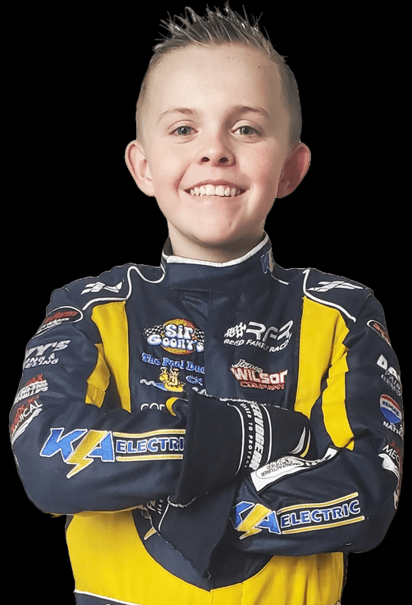

Hometown: Rossville, Georgia
Born: January 13, 2014
Favorite Driver: Kyle Larson
Favorite Movie: Top Gun
Hobbies: Racing, Baseball, Skateboarding
Championships: 0
Total Wins: 6
Top 3 Finishes: 13
Logan Conner's journey with Reed Family Racing began long before he ever climbed behind the wheel. In 2022, Logan joined the team by helping work on his cousin TW Reed's kart at the racetrack and in the shop. Week after week, he learned the fundamentals of racing from the crew side of the sport, gaining an appreciation for the hard work and dedication required to compete. As the season progressed, Logan was given opportunities to test a kart of his own, quickly showing natural talent and a desire to race.
That talent earned Logan his opportunity as a driver in 2023. Entering his rookie season, he faced the steep learning curve that every young racer encounters, but he adapted quickly. Throughout the year, Logan consistently improved and found himself battling for victories against more experienced competitors. His breakthrough moments came with two feature wins, highlighted by an impressive victory in the prestigious 40-lap season finale at Sugar Limb Speedway.
With a year of experience under his belt, Logan entered the 2024 season with confidence and determination. The results spoke for themselves. He scored four victories throughout the year and became a regular contender for wins and podium finishes. His consistency and speed helped him finish second in the Dawgwood Speedway championship standings, marking a significant step forward in his development as a driver.
After successful seasons in dirt kart racing, Logan and TW took on a new challenge in 2025 by making the transition to Bandolero racing. The move represented the next chapter in Logan's racing journey as he continued to develop his skills on asphalt while carrying forward the same work ethic and determination that helped him succeed in karting. From crew member to race winner, Logan's story is a testament to patience, perseverance, and a passion for motorsports that continues to grow with every lap.